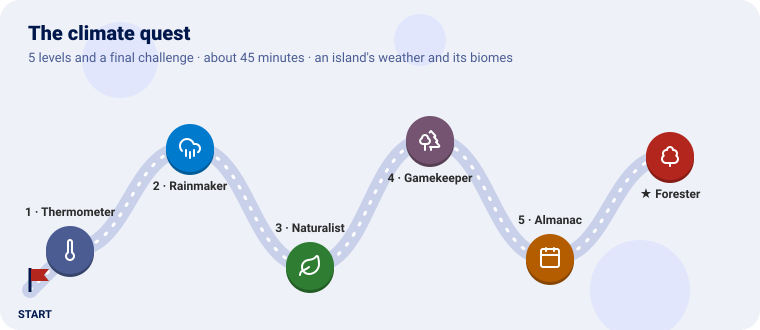
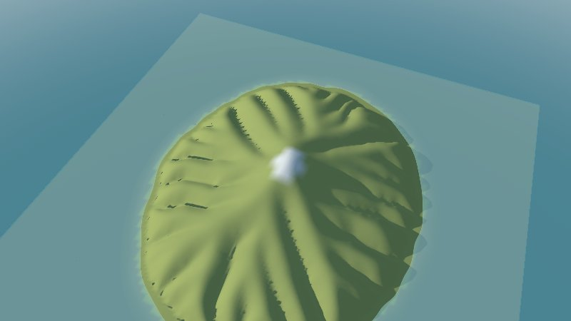
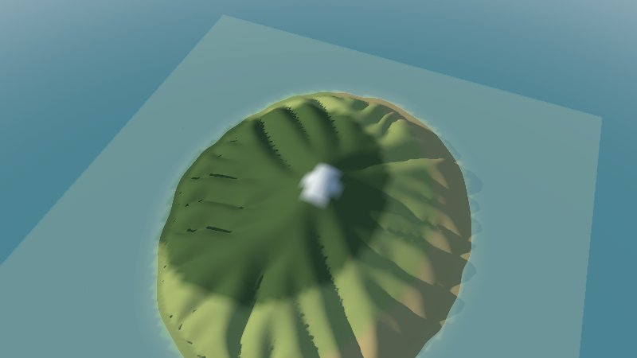
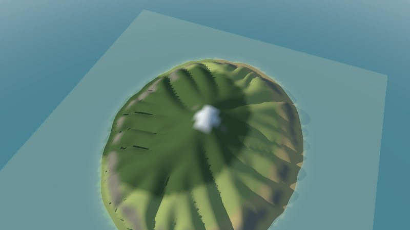
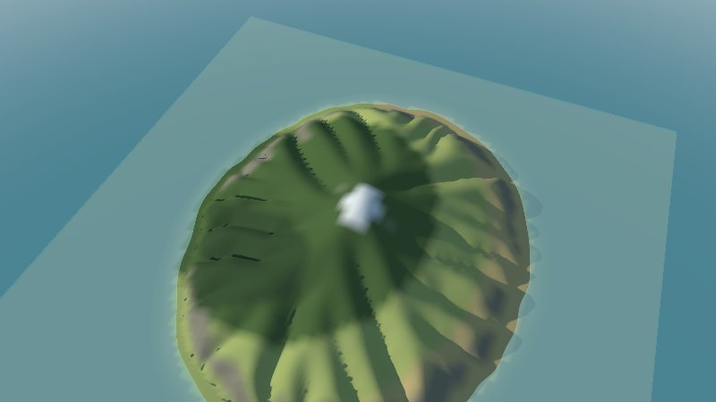
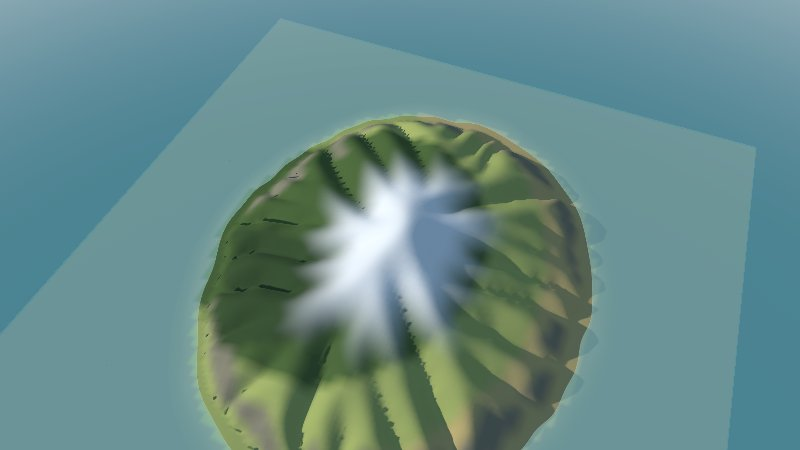
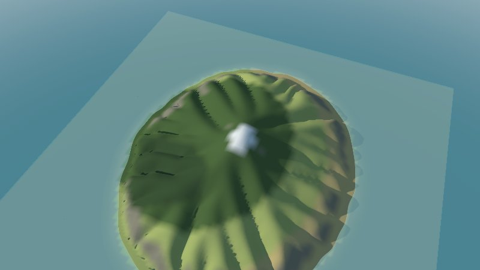
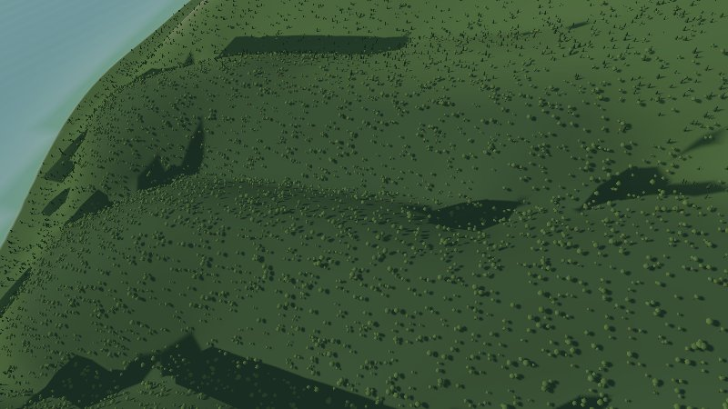
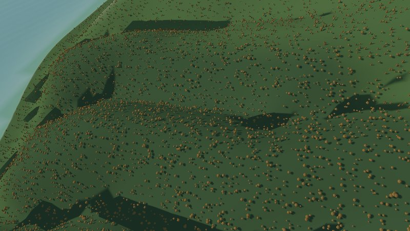
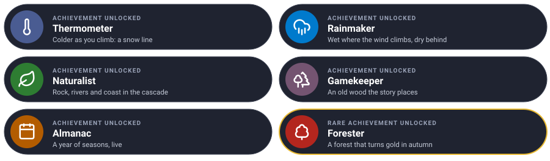

Give an island its weather, one level at a time. Each level teaches one piece of the climate plugin and ends with the island coloured by its biomes: snow, rock, forest, meadow, steppe.

We use the mountain island shaped in the terrain quest (any relief will do). It gets cold as it climbs, wet where the west wind meets it and dry behind it; rivers, cliffs and beaches find their own biomes; an old wood stands where the story puts it; and a year passes, with snow and autumn colours.
Every level has the same shape: the idea (explained with something from everyday life), the rules, a checkpoint to know it works, and an optional bonus.
You need Go 1.25 and GEOS (sudo apt install libgeos-dev, brew install geos). Clone the
projects side by side and make a folder for the quest:
git clone https://github.com/akrck02/go-renderer
git clone https://github.com/akrck02/go-scene-builder
git clone https://github.com/akrck02/go-simulator
git clone https://github.com/akrck02/go-simulator-climate
mkdir weather && cd weather
Put the island’s relief in it as island.json and island.f32: from the terrain quest, the end
snapshot results/island 200 elevation.json and .f32, renamed. (Or write your own with the
terrain quest’s island/main.go.)
The climate rule can save its biomes as a layer that go-scene-builder colours the terrain with.
Two small files, made once. empty.geojson, a map with nothing on it:
{"type": "FeatureCollection", "properties": {"units": "km"}, "features": []}
view.yaml, a colour for every biome:
units: m
chunk: 2
environment: {sun: [220, 35], water_level: 0}
terrain:
color: "#8a8674"
biomes:
snow: {color: "#eeeeea"}
rock: {color: "#8a8674"}
meadow: {color: "#a7b46a"}
steppe: {color: "#c8b47a"}
forest: {color: "#4f6b3a"}
riverside: {color: "#6f9a5a"}
coast: {color: "#d9cfa3"}
old wood: {color: "#3b5230"}
After every run:
go run ../go-scene-builder/cmd/build-scene -map empty.geojson -relief island.json -layer biome=biomes.json -style view.yaml -out island.glb
go run ../go-renderer/cmd/visor island.glb
The pictures were taken with -zoom 0.75 -sun-azimuth 250 -sun-elevation 25.
| Mission | Pieces | Time |
|---|---|---|
| Colder as you climb, and snow on top | climate, temperature, biome rules, layer |
8 min |
Climb a mountain and your ears pop and your hands get cold: the air cools about 6.5 °C for every kilometre up. That is the lapse rate. Start from the temperature at the sea and the height of every cell says how cold it is.
Biomes are a list of rules read top to bottom, like a sorting hat: each cell gets the first biome whose conditions it meets. The last rule, with no conditions, catches everything left.
rules.yaml:
plugins:
- name: climate
command: [go, run, .]
directory: ../go-simulator-climate
stages:
- name: year
clock: {unit: month, from: 0, to: 1, step: 1}
snapshots: [1]
snapshot_fields: [temperature, biome]
rules:
- rule: climate
with:
relief: island.json
origin: [0, 0]
layer: biomes.json
temperature: {sea_level: 12, lapse: 6.5}
biomes:
- {biome: snow, when: {temperature: {max: 6}}}
- {biome: meadow}
go run ../go-simulator/cmd/simulate -rules rules.yaml -output results/
biomes.json and biomes.f32 appear next to the rules file, and results/ holds
year 1 temperature and year 1 biome. On the island, a cap of snow above about a kilometre, and
meadow everywhere else.

| Mission | Pieces | Time |
|---|---|---|
| Wet where the wind climbs, dry behind | rain, precipitation in biome rules |
8 min |
Wind from the sea carries water. When it meets a mountain it climbs, cools and rains, like a sponge squeezed on the way up; past the top it comes down dry. So the side facing the wind is wet and green, and the other side, in its rain shadow, is dry.
In the climate rule, a west wind, and biomes by rain (millimetres a year):
rain: {wind_from: 270, background: 450, orographic: 1400}
biomes:
- {biome: snow, when: {temperature: {max: 6}}}
- {biome: forest, when: {precipitation: {min: 1500}}}
- {biome: meadow, when: {precipitation: {min: 1250}}}
- {biome: steppe}
wind_from: 270 is a wind from the west; orographic is how much more rain the climb brings.
Add precipitation to snapshot_fields to see the rain itself.
A ring of dark forest on the high, wet slopes; meadow below; and the east side, behind the mountain, turns to tan steppe.

| Mission | Pieces | Time |
|---|---|---|
| Cliffs, riverbanks and beaches | slope, river, coast, terrain |
6 min |
A naturalist knows that what grows depends on more than weather: nothing roots on a cliff, willows line the rivers, and the shore has its own plants. The plugin works out the slope, where water gathers into rivers and where the coast is, and the biome rules can ask for them.
Order matters: the sorting hat takes the first rule that fits, so the special places come before the weather.
terrain: {river_area: 0.5, river_slope: 0.05}
biomes:
- {biome: snow, when: {temperature: {max: 6}}}
- {biome: rock, when: {slope: {min: 0.6}}}
- {biome: riverside, when: {river: true}}
- {biome: coast, when: {coast: true}}
- {biome: forest, when: {precipitation: {min: 1500}}}
- {biome: meadow, when: {precipitation: {min: 1250}}}
- {biome: steppe}
Grey rock on the steepest cliffs of the coast, pale sand along the shore, and greener strips where the rivers run.

| Mission | Pieces | Time |
|---|---|---|
| An old wood that the story puts there | regions |
5 min |
Some places are not where the weather says, but where the story says: a royal hunting forest,
an old wood with a name. A region is a stencil laid on the map: inside it, a biome of its
own, where its conditions hold. ragged frays its edge so it does not look drawn with a compass.
After biomes, in the climate rule (the centre is in kilometres east and north):
regions:
- {biome: old wood, ellipse: {centre: [-1.5, -1], radii: [1.2, 0.8]}, ragged: 0.15, when: {height: {min: 100}}}
A darker patch of old wood in the south-west, its edge frayed, never on the beach (it asks for
100 m at least). The biomes event in results/events.jsonl lists it among the names.

| Mission | Pieces | Time |
|---|---|---|
| A year of seasons, live in the viewer | seasons, a month clock, the live simulator |
8 min |
An almanac tells what each month brings. The seasons rule moves the snow line down in
winter and up in summer, and tints the leaves through the year: fresh green in spring, dark in
summer, orange in autumn. The renderer draws it on the scene as it runs.
A year of months, a quarter of a month every half second, and the seasons after the climate:
clock: {unit: month, from: 0, to: 12, step: 0.25, pace: 0.5}
snapshots: [0]
rules:
- rule: climate
with: { … as before … }
- rule: seasons
with:
year_length: 12
warmest: 0.55
temperature: {sea_level: 12, lapse: 6.5, amplitude: 8}
snow_at: 0
snow_blend: 150
foliage:
- {at: 0.25, color: "#9cc35a", amount: 0.15}
- {at: 0.5, color: "#5d7a3c", amount: 0}
- {at: 0.8, color: "#c8752f", amount: 0.6}
- {at: 0.95, color: "#7a6e5f", amount: 0.6}
Build the scene as before, then run it live:
go run ../go-simulator/cmd/simulator -rules rules.yaml island.glb
The year turns: in winter, snow down the mountain’s shoulders; by summer, only the snow biome on
the peak. -advance 26 starts in summer.


Fill the forest with trees: firs and oaks in the forest, oaks in the old wood and along the rivers, and watch them turn orange in autumn.
Hint: go-scene-builder sows models over a biome:
terrain.biomes.<name>.decoratewith thescatterrecipe, and a model library. A part withmaterial: {foliage: true}takes the seasons’ tint.
Try it on your own first, then compare with the solution.


models:
fir:
variants: 3
vary: {color: 0.1, scale: [0.8, 1.3]}
parts:
- {shape: cylinder, radius: 0.3, height: 2, color: "#5a4632"}
- {shape: cone, radius: 2.2, height: 9, at: [0, 1.5, 0], color: "#2f4a2c", material: {foliage: true}, move: 0.2, grow: 0.15}
oak:
variants: 3
vary: {color: 0.12, warmth: 0.06, scale: [0.8, 1.25]}
parts:
- {shape: cylinder, radius: 0.35, top_radius: 0.25, height: 3, color: "#5a4632"}
- {shape: blob, size: [6, 5, 6], at: [0, 5, 0], wobble: 0.15, move: 0.6, grow: 0.2, color: "#56713a", material: {foliage: true}} forest: {color: "#4f6b3a", decorate: [{recipe: scatter, density: 0.002, models: {fir: 2, oak: 1}}]}
old wood: {color: "#3b5230", decorate: [{recipe: scatter, density: 0.003, models: {oak: 1}}]}
riverside: {color: "#6f9a5a", decorate: [{recipe: scatter, density: 0.002, models: {oak: 1}}]}
Your island has a climate worked out from its own shape, biomes in a sorting hat you wrote, an old wood the story needed, and a year that turns.
| Idea | Difficulty | Hint |
|---|---|---|
| Colder to the north | ⭐ | temperature.northward: °C per 10 km |
| A wetter year | ⭐ | background: 900 |
| Vegetation that grows by itself | ⭐⭐⭐ | The flora plugin reads these fields and grows forests over centuries |
| You see | Why, and what to do |
|---|---|
| Everything is one biome | The thresholds miss your island: snapshot temperature and precipitation and look at their range |
| The layer does not line up with the island | Use origin: [0, 0] with a snapshot of the terrain plugin, or save the layer with layer: rather than using the snapshot’s year 1 biome |
| No snow moves live | The seasons rule needs the month clock with a pace, and the scene must have ground facing up |
pkg-config: geos not found |
GEOS is needed by go-scene-builder |